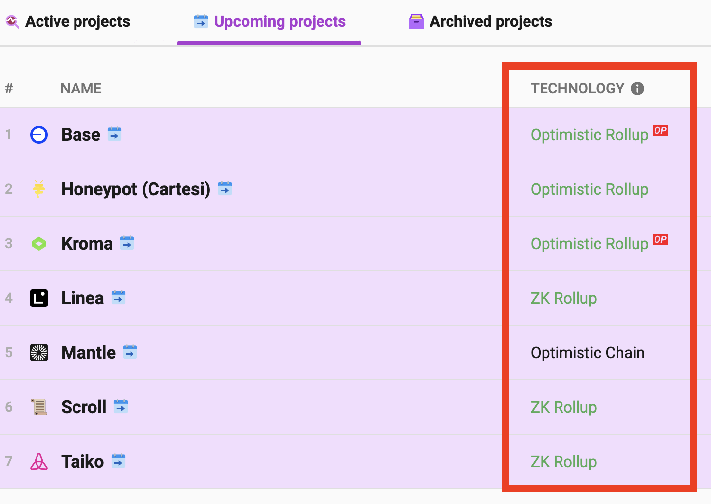
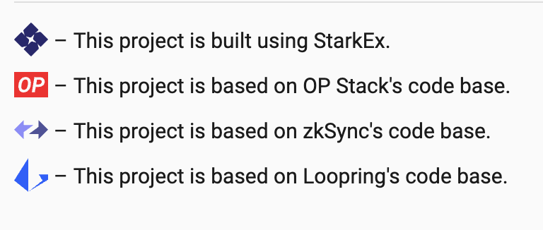
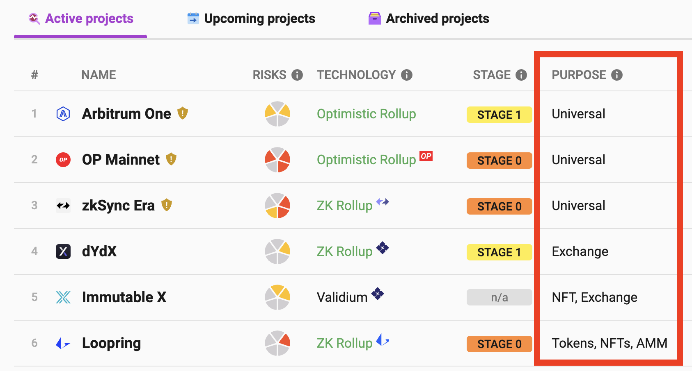
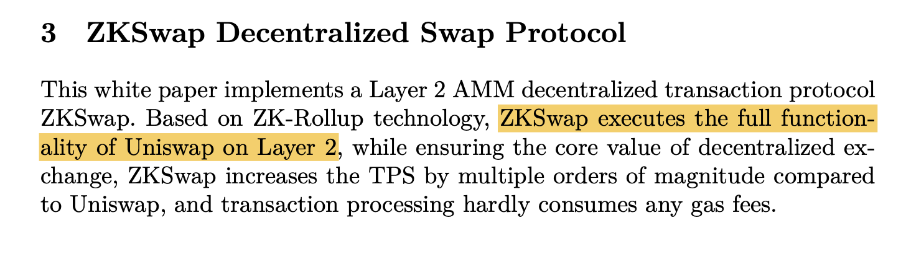
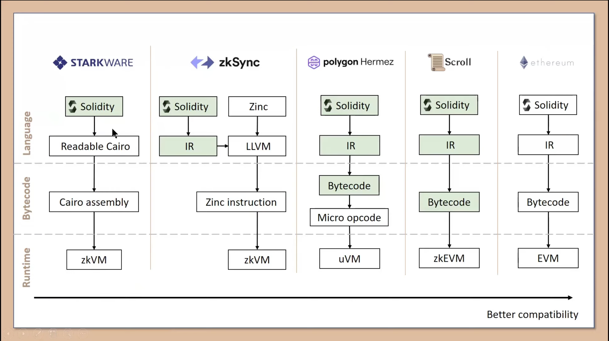

Response to Ideas on Layer 2 Project Entrepreneurship
Note: I have no intention of disrespecting the letter. The viewpoints on L2 in the email have given me a lot of inspiration. Since some of the content does not completely align with my understanding, I have seriously considered and thought about the meaning of the letter. I would like to express my views on L2 here. As there is little L2-related content on my blog, I’ll put it up here to purely discuss technical issues.
The Letter
Hello, are you still looking for a job?
Jul 6, 2023, 5:39 PM (2 days ago) to me
Hi Wangyu! I came across your blog by chance and am not sure if this email will reach you. L2 has become quite popular this year. Various large companies, as long as they have some money, are starting to focus on > L2. According to L2beat, there are quite a few L2 projects about to launch: https://l2beat.com/scaling/tvl#upcoming It’s unclear whether all L2s are just copying each other. But it feels like the current L2 technologies mostly come from > the open-source codes of a few leading companies. If this is true, does it mean anyone can fork a version themselves? If so, then we are that “anyone” :) Our startup team is quite interested in jumping on the L2 public chain “trend,” and it seems you are an expert in this area.
If you are also interested, we can discuss collaboration methods further? My general idea is remote, with you freely leading the chain’s evolution.
PS: My telegram is @******. Feel free to contact me online.
Response
Hello!
I am very pleased to receive your email, and I apologize for not responding promptly.
I tried to carefully understand the content of your letter. Regarding some of the points about L2, I want to describe my understanding.
1. The Difference Between “Technology Types” and “Projects”
There are 4 types of Layer 2 technologies: State channels, Sidechains, Optimistic rollups, and ZK rollups. All projects fall within these 4 types. Among the upcoming projects, most are of the rollups type, but there is no information on whether their code is forked from existing projects.
There are specifically these 4 projects:
However, from the list of launched projects, even if they fork the same project, their application scenarios are highly customized and vary greatly:
2. Existing Projects Are Not Simple Forks
Take zkSync as an example. Three projects have this label in the list:

They are zkSync Era, zkSync Lite, and ZKSpace. zkSync Era and zkSync Lite are from the same company.
Looking specifically at ZKSpace, it indeed uses zkSync’s contracts but is not simply a fork of the entire project. Instead, it uses zkSync’s contract code and modifies it to fit its own business. Additionally, ZKSpace also uses code from other projects.
From ZKSpace’s (formerly ZKSwap) whitepaper, we can see that ZKSpace aims to be Uniswap on Layer 2, including AMM functions, which are those of a market maker.
zkSync is a general Layer 2 project that does not provide very specific functions. ZKSpace uses some of zkSync’s contract code to do things that are highly relevant to their business and have specific goals. It does not compete directly with zkSync itself.
Looking at projects with the OP label, which are forked from the OP project:
- Arbitrum initially forked OP, then changed some economic model aspects, and later restructured the project as it grew. Additionally, Arb’s operational capabilities are strong, having hosted several Odyssey events.
- Boba’s feature is that it doesn’t require a 7-day wait to withdraw funds; withdrawals are immediate. Moreover, through its own so-called hybrid computing technology, it brings web2 capabilities to the blockchain.
- Zora is a layer2 dedicated to the NFT field.
- Mantle provides decentralized sequencers, among other things.
In summary, these projects all have specific purposes and aim to achieve certain functions by reusing existing code. The focus is likely on the goals of these projects, i.e., what they aim to do. They combine their business scenarios rather than just being able to run by simply forking the code.
3. L2 is Not a Chain
Current rollup projects are centralized. They are not a chain themselves and do not have consensus mechanisms; the project team operates them.
Summary
Regarding your idea of developing an L2 project, I mean that, based on your description, it may not be as simple as you think. It might involve specific issues. Innovations in application scenarios, combined with DeFi or GameFi, or technical innovations that can improve certain pain points, might be needed.
I also want to jump on the trend and hope for a suitable entrepreneurial opportunity. I am currently looking for a job, but from my perspective, I am quite confused. I don’t have a direct idea of what direction a project should take; I think those involve quite market-oriented aspects and require significant capital.
I’m not sure about your specific thoughts. As there is a lot of content, I replied via email. Feel free to contact me if you have any questions.
Supplement
There are some topics not mentioned in the reply, which I will briefly discuss.
First, why is Layer 2 hot? Because Vitalik has frequently mentioned zkEVM in his recent blogs. For example, in the article Endgame, he considers supporting ZK-rollup as an important task for Ethereum’s future. Some issues cannot be directly resolved on Layer 1, so they hope to solve them through Layer 2. With Vitalik, a highly regarded developer, leading the technical direction in the ecosystem, Layer 2 has become a development hotspot for Ethereum.
Vitalik is quite optimistic about ZK-SNARKs type zkEVMs. From a technical perspective, ZK-rollups will be the so-called Endgame. However, ZK development costs are very high and currently still in research and development. Small-scale capital cannot afford it; it is too expensive.
The Dapp-learning community has a technical sharing video on Scroll on Youtube, which is quite good. The entire Scroll technical team is based in China. From the video explanation, it seems Scroll’s technical solution involves some brute-force elements, such as creating a table for a certain type of circuit results and expanding various tables to support the entire EVM. This is how Scroll compares the ways each ZK project implements EVM completeness:
Vitalik’s blog post The different types of ZK-EVMs also discusses the classification of zkEVMs. Anyway, the hype around Layer 2 should be referring to the heat around ZK-rollup projects.
Optimistic rollups are more like a transitional solution for L2. I believe once ZK rolls out, OP projects will be impacted, as OP does not rely on the reliability of cryptographic technology. From its name, you can see it is optimistic, assuming a transaction has no issues first and then giving a 7-day challenge period. If there are issues, users need to challenge it themselves or third-party verifiers to fully challenge, involving significant human intervention.
Another issue is the centralization of L2 projects. Except for Sidechains projects, L2 must be centralized because consensus is handed over to L1. L2 does not manage it. From a motivational perspective, L2’s role is to quickly collect transactions and package them to L1. The ultimate trust in a transaction falls on L1. Users trust L1’s transaction records, not L2, so L2 does not need decentralization. Users don’t need it, and project parties don’t need it. L2s are generally issued and operated by project teams. Users trust the project’s technical solution and are willing to engage with it and pledge assets.
There is also the issue of L2 user experience. Currently, few users use OP or ARB for low-cost asset transfers. They prefer using BNB or TRX for anonymous payment scenarios. The more common uses are governance token investments or interactions in DApp project forms. The 7-day wait for OP to redeem assets is quite inconvenient. Asset transfers between L2 chains are also an issue. For example, can USDT on OP be transferred to ARB? Otherwise, if I use OP and another person uses ARB, we cannot trade. There is still much room for improvement in this area.
L2 is a promising technical direction, and we look forward to it bringing us a better user experience. As for whether there are low-cost profit opportunities, that is uncertain.